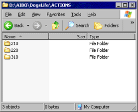
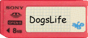
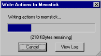

|
|
| Skitter Tutorial -
Customize DogsLife! |
Contents of this website are freeware and/or copyrighted material, and may not be sold
under any circumstances.
Email: dogsbody@dogsbodynet.com
Home:
https://dogsbodynet.com
|
Customize DogsLife by Adding Skits!
The first two tutorials introduced
making skits with motion, light & sound. The next two show
simple ways of using those skits on AIBO.
This tutorial demonstrates adding them to DogsLife. One extra step is
required
-- downloading the DogsLife source code to your PC.
Otherwise, its similar to the YART tutorial.
If you haven't used YART yet, please review tutorial 3 first.
Note this tutorial only applies to the 210, 220, and 310.
Our goals are:
Let's get started!
|
| 1.0
Installing DogsLife Source Code |
|
|
| 2.0
DogsLife Action Directories |
| (1) |
DogsLife has one action directory for each
AIBO platform. Go into the folder matching your AIBO model.
Most actions are found in the 210 folder. Other than a few
exceptions, the 220 & 310 version skits are mostly derived
automatically by Skitter & OdaBuild.
DogsLife currently uses action files (*.act) for all skits, and UAC files for tweaking them.
|
 |
| (2) |
2.1 Copying Workbooks
into DogsLife
Copying AIBO Workbooks is easy. Just drag-n-drop copy the
files using
Windows Explorer (hold CTRL key down while dragging).
2.2 Copying
Action Files into DogsLife
Copying action files is harder. You must copy the action file,
motion, led & sound files. The easiest way is using
Skitter.
Open the target performance in Skitter, and use the File Menu,
"Save-As"
command. Select the DogsLife Action directory, and
Skitter saves copies of all files associated with the performance.
|
|
|
3.0
Adding Skits to DogsLife Memstick
|
(1)
|
Insert
a programmable memory stick containing DogsLife into your memstick
reader.
|

|
|
|
(2)
|
Start Skitter & close any open skits.
Click on the toolbar "Write"
button. Skitter prompts for the AIBO platform being
used. This must match your AIBO model, or AIBO won't boot
up
properly.
Select your AIBO type (or click Cancel to quit).
|
 |
|
|
(3)
|
Now select the DogsLife action directory
you updated earlier.
The example (see right) shows selecting the DogsLife 210 action
directory.
|
|
|
|
(4)
|
Skitter compiles the action directory, and
writes it to the programmable memory stick.
DogsLife action directories are large and take a while to
compile. It could take several seconds to finish.
|
 |
|
|
(5)
|
Once Skitter displays "Done!" the memstick
is ready, or an error message if something went wrong.
If an error occurred, click on the "View Log"
button to see what happened.
Otherwise, click "OK" to close the dialog.
|
 |
|
|
|
| 4.0
Using New Skits in YART |
(1)
|
Start AiboPet's YART
utility on the DogsLife memory stick. It can be found in
the memstick "CUSTOM" folder. Double click on "YART.EXE"
from Windows Explorer.
The "When this happens" events are different, but
otherwise using YART on DogsLife is identical to before.
|
|
|
|
(2)
|
From the "When this happens"
box, expand "AIBO voice command", then click "Hello".
Click on the "Available Actions" box & select "User
Actions". YART puts all the DogsLife & your custom/new
skits in this
category.
----
All the DogsLife "AIBO does this" slots are initially empty. The
slots teach DogsLife new tricks, and don't replace old ones.
|
|
|
|
(3)
|
Click-n-drag one of the listed actions
(ie:
"firstwave"), into the "AIBO does this" box.
|
|
|
|
(4)
|
You're done! Click
the large "Save RCode program to memory stick" button.
Once saving is complete, insert the memory stick into AIBO.
Turn on AIBO, and after booting, try saying "Hello". AIBO
-may- respond with the custom performance you
added.
Dogslife combines things it already knows with elements from
YART. You'll probably need a few tries before your
tweaks appear if AIBO is feeling stubborn.
If you've done all the tutorials, you can now create skits, use them in
YART, AiboMind, and in DogsLife!
Congratulations!
Got a question? Ask Dogsbody!
|
|
|
Legalese: These programs are provided AS IS without any warranty, expressed or implied.
This includes without limitation the fitfulness for a particular purpose or
application. People using the software bear all risk
as to its quality and performance. The user of the software
is responsible for any damages whether direct, indirect, special,
incidental or consequential arising from a failure of these programs to operate in
any manner desired. Etc, etc...
"AIBO" is a registered trademark of Sony Corporation.
"AIBO Master Studio", "R-Code", and "Memory Stick" are trademarks of Sony Corporation.
|
|